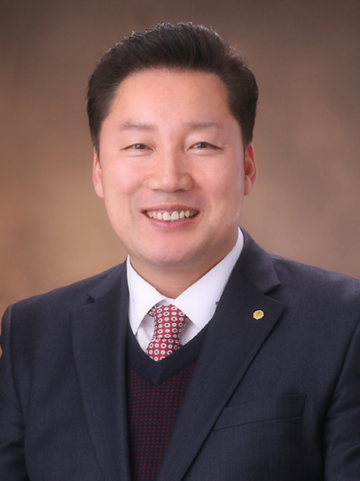

할렐루야! 하나님의 크신 은혜와 평강이 우리 총회와 노회, 그리고 지교회 위에 충만하기를 기원합니다.
오늘 우리 대한예수교장로회(한영) 총회는 급변하는 시대적 파도 속에서 오직 하나님의 말씀으로 무장된 바른 목회자를 양성하기 위해 총회신학학술연구원의 문을 활짝 열게 되었습니다. 이 모든 과정을 인도하신 에벤에셀 하나님께 모든 영광과 찬송을 올려드립니다.
지금 우리가 마주한 시대는 영적 가치관이 혼탁해지고 복음의 본질이 도전받는 시기입니다. 이러한 때일수록 교회의 미래는 하나님의 마음에 합한 사람, 즉 바른 신학과 뜨거운 영성, 그리고 겸손한 인격을 갖춘 지도자를 세우는 일에 달려 있습니다.
우리 총회신학학술연구원은 다음과 같은 사명을 가지고 나아가고자 합니다.
• 성경의 절대 권위를 믿고 개혁주의 신학 전통을 바르게 전수하여 흔들리지 않는 진리의 터 위에 서겠습니다.
• 깊이 있는 학문적 탐구뿐만 아니라 성령 충만한 기도의 야성을 회복하여 현장에 강한 목회자를 길러내겠습니다.
• 세상의 아픔을 치유하고 시대의 질문에 복음으로 답할 수 있는 실천적 지도자를 배출하겠습니다.
사랑하는 동역자와 신학도 여러분, 신학은 단순히 지식을 쌓는 과정이 아닙니다. 하나님을 더 깊이 사랑하고, 그분의 양 떼를 위해 목숨을 거는 사랑을 배우는 과정입니다. 우리 연구원이 배출하는 한 사람 한 사람이 한국 교회의 희망이 되고, 열방을 향해 복음의 빛을 발하는 보석과 같은 존재가 되리라 확신합니다.
이 거룩한 여정에 함께해 주십시오. 기도로 마음을 모아주시고, 하나님 나라의 확장을 위해 헌신할 귀한 인재들이 이곳에서 마음껏 꿈을 꿀 수 있도록 격려해 주시기를 부탁드립니다.
총회신학학술연구원을 통해 이루실 하나님의 위대한 일을 기대하며, 여러분의 가정과 사역 위에 주님의 은총이 늘 함께하시길 기도합니다.
감사합니다.
우상용 목사드림